Simplex Calculator
Developed a custom Simplex Method calculator using R and RShiny. While the reactive frontend presented a unique architectural challenge, the project served as a deep dive into a complex UI/UX implementation for mathematical tools. Successfully managed the end to end development from algorithmic logic to user deployment.
Susmaryosep
Served as Team Lead for a 3 member crew during the UPLB COSS Game Jam. We developed a culturally themed shooter game featuring the Filipina revolutionary, Gabriela Silang. The game reimagines history by sending her back to the early invasion era, where she defends the nation using a slipper as a unique projectile weapon. The project's name reflects our team's collective journey and the sense of accomplishment we felt during the delivery.
TeraGarden
 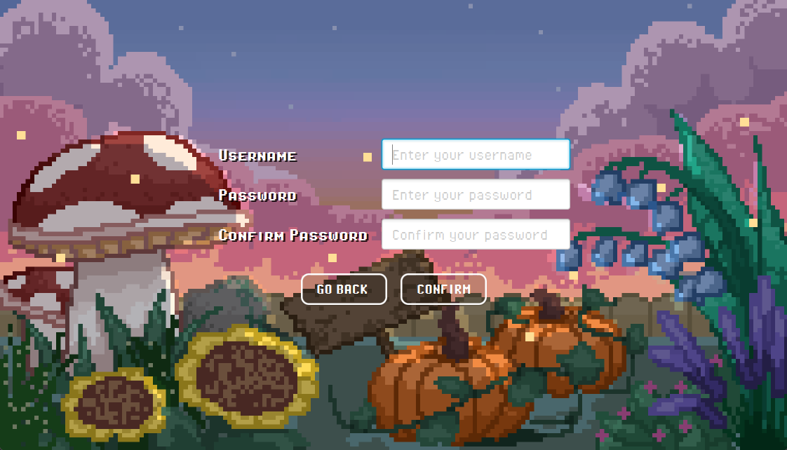
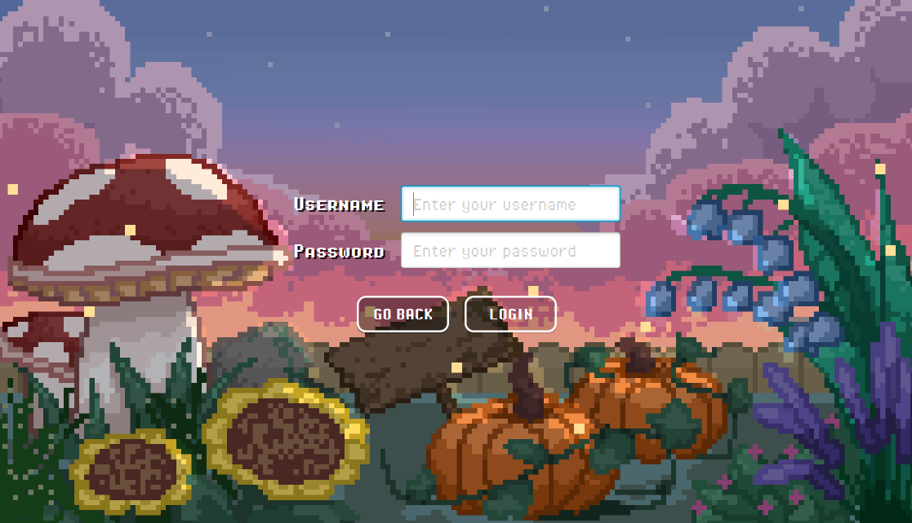
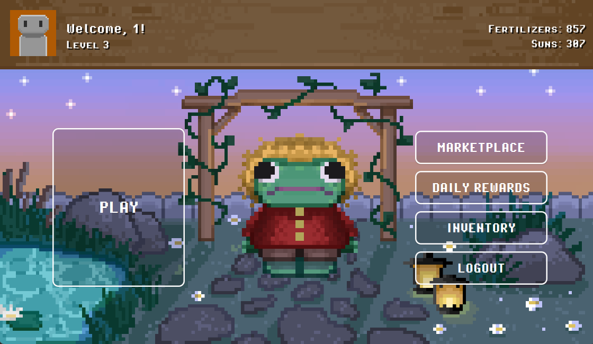
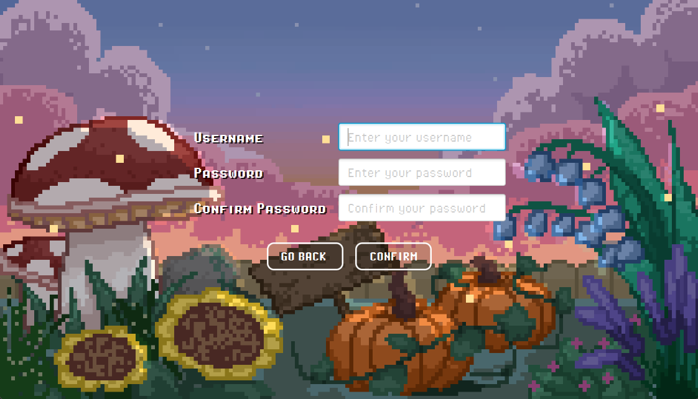
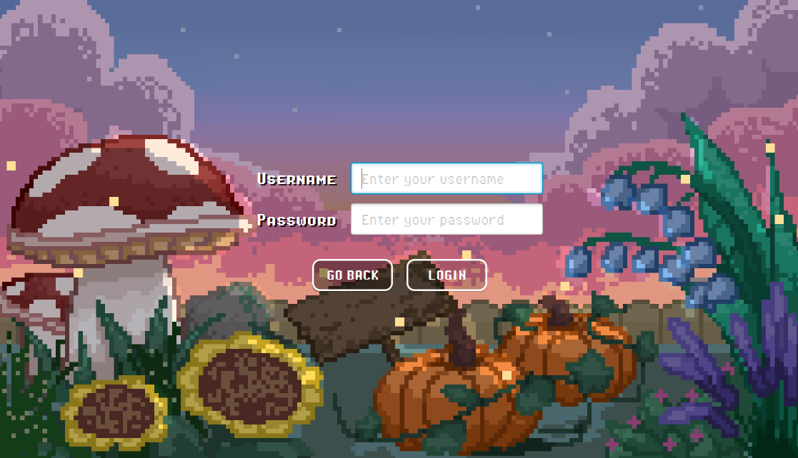
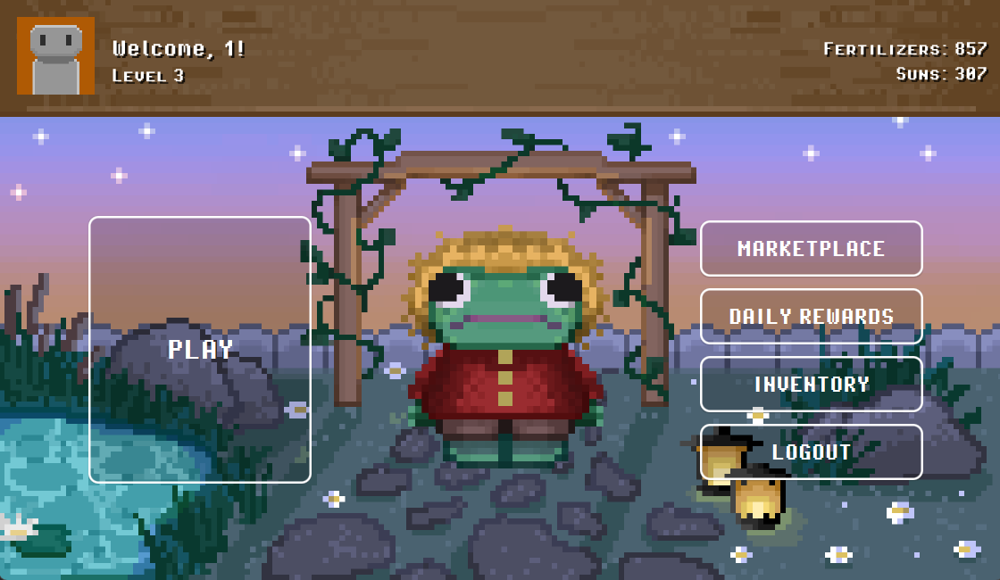
 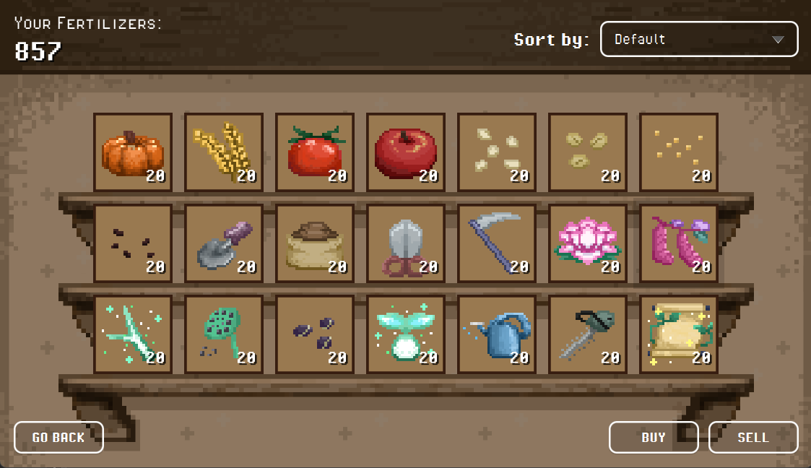
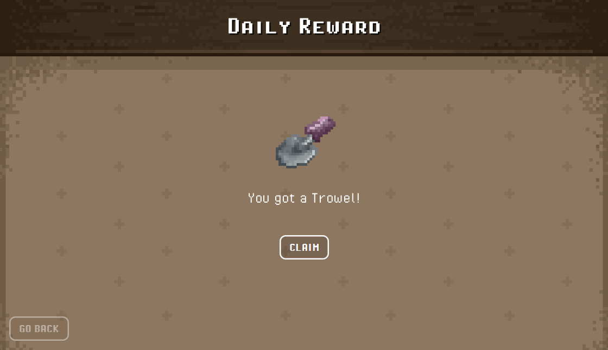
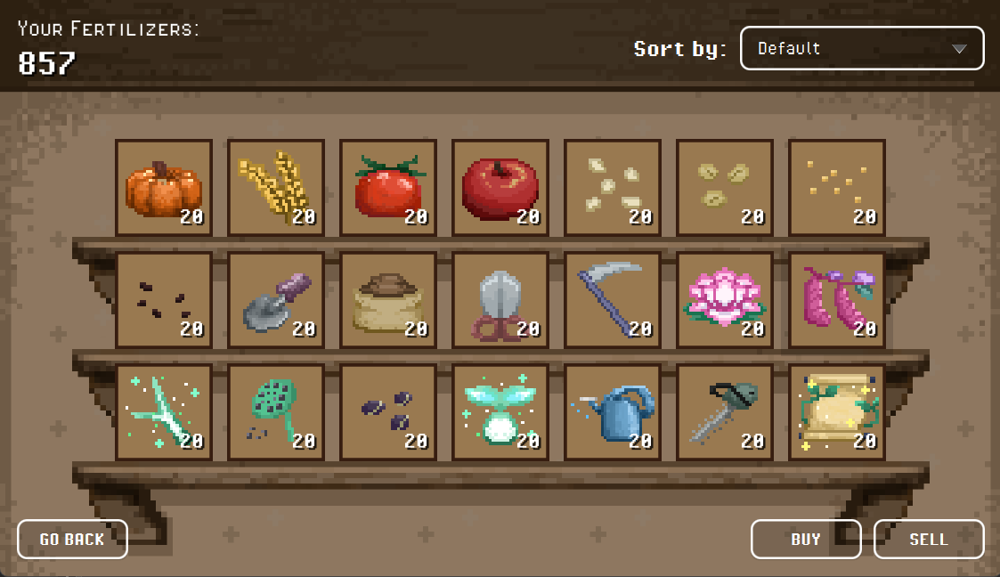
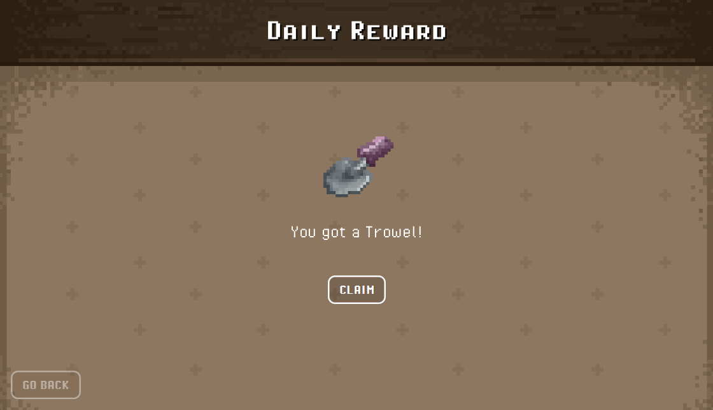

Served as a Backend Developer for a Java-Based clicking and inventory management game. Engineered the core game logic, including item database, state persitance, and inventry serialization. This project, completed for academic credit, was a standout experience for me that further solidified my skills as a backend developer due to how it was an object oriented design.
ELBITutors
 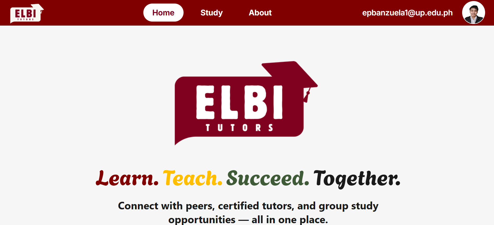
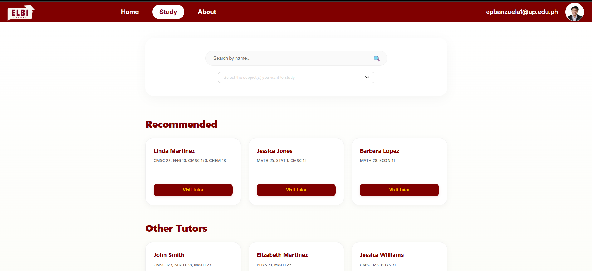
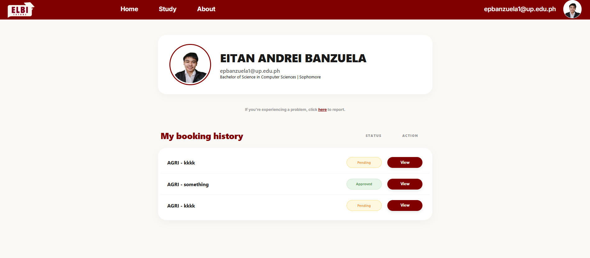
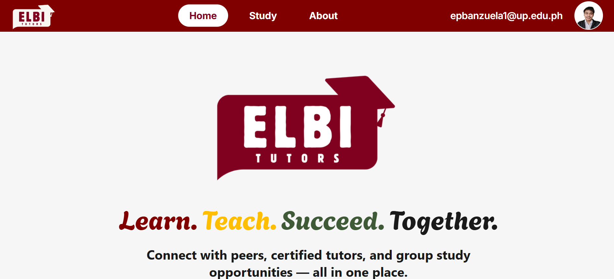
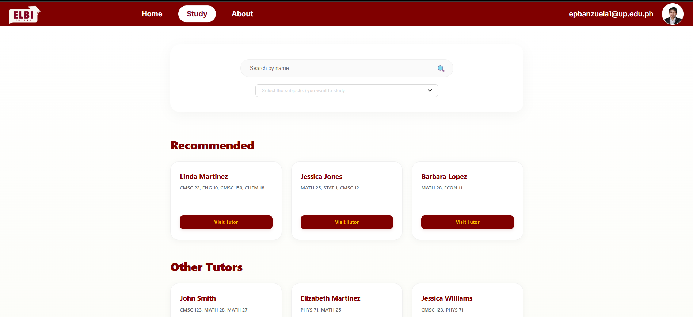
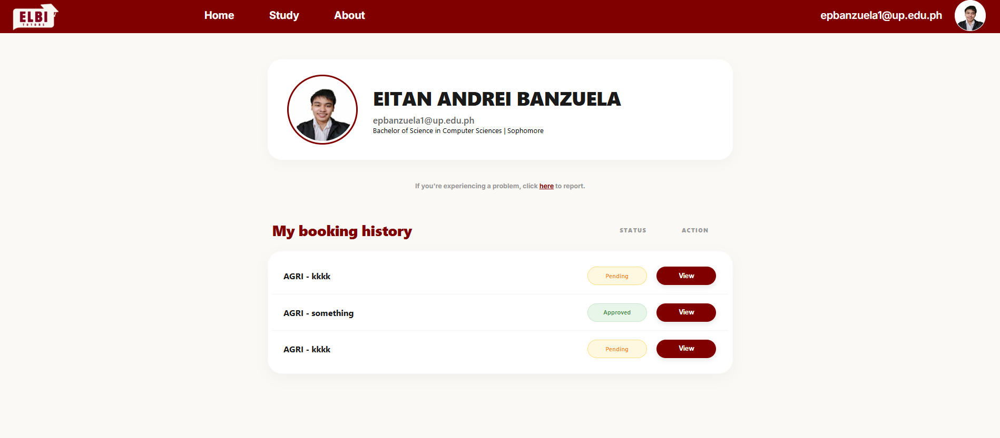
Acted as a Backend Developer utilizing the MERN Stack to build a tutor booking prototype for the UPLB community. Developed as a project for the Young Software Engineers' Society (YSES). This initiative focused on the double booking system of UPLB LRC on tutors and admins. This marks my most technically rewarding experience.